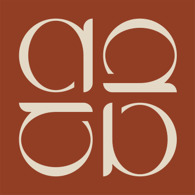

Akarçay Patisserie
Menü
Lezzet · Kahve · Tatlı
Kahvaltıdan tatlıya, günün her anına yakışan tatlar.
İçeriğe Göz Atveya ekrana dokunun

Akarçay Patisserie
Lezzet · Kahve · Tatlı
Kahvaltıdan tatlıya, günün her anına yakışan tatlar.
İçeriğe Göz Atveya ekrana dokunun
